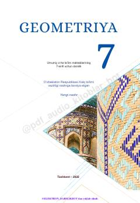

G77-sinf o'quvchilari uchun mo'ljallangan geometriya fanidan rasmiy darslik.
Ushbu darslik O'zbekiston umumiy o'rta ta'lim maktablarining 7-sinf o'quvchilari uchun mo'ljallangan. Kitobda geometriyaga oid boshlang'ich tushunchalar, uchburchaklar, parallel to'g'ri chiziqlar va yasashga doir masalalar tizimli ravishda yoritilgan.